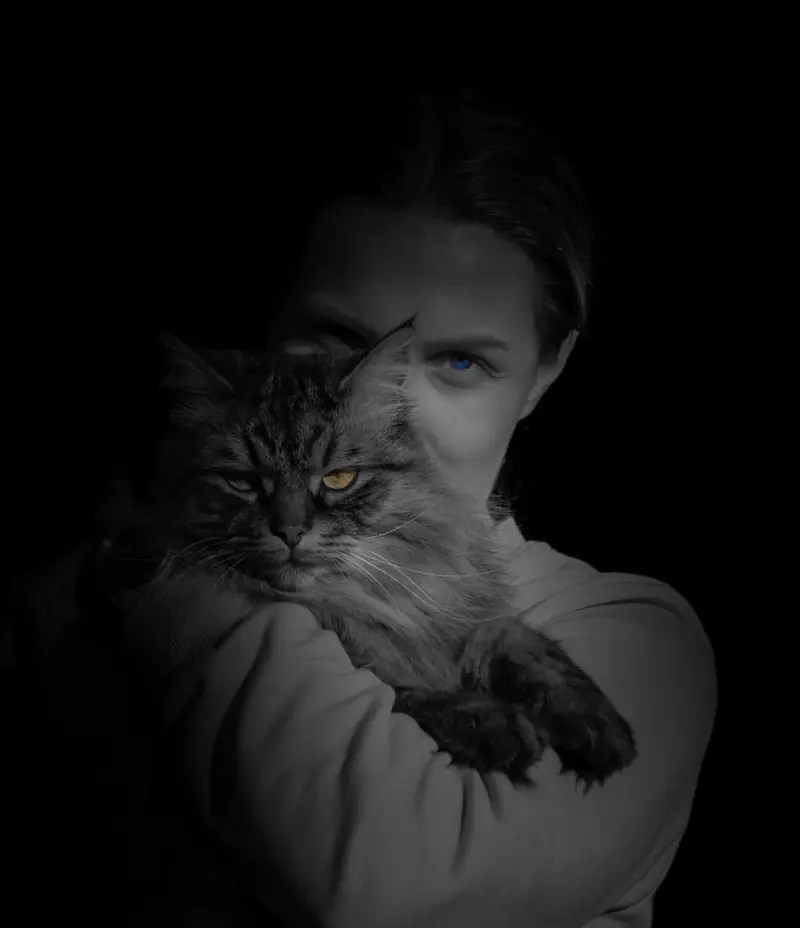

Fotograaf / Nederland
FotodiSogno01 / 03Het laatste licht
Een eerste indruk
Even blijven kijken.
Schuif om te ontdekken. Open een foto om meer te zien.01 / 06
01 /Geselecteerd werk
Images that define my way of seeing
A focused selection of people, places, animals and details in which light sets the atmosphere.

A way of seeing
Light reveals what speed makes invisible.Rafał Wilk

02 /Over mij
I photograph what is easy to overlook
People, places and brief moments in which light creates atmosphere.
I look for natural emotion, calm compositions and images that remain in memory longer than the event itself. My work moves between portrait, street, animals, travel and visual detail.
Based in the NetherlandsAvailable for selected collaborations and travel projects
Start a conversation↘
03 /Contact
Have an idea for a shoot or collaboration?
Tell me briefly what you have in mind. I am easiest to reach by e-mail or WhatsApp.